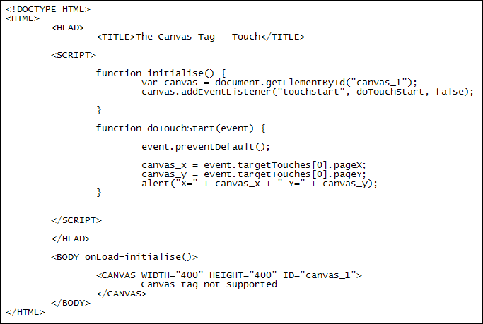

The HTML5 canvas and touch events
Ongoing HTML5 Canvas Tutorial: 1 2 3 4 5 6 7 8 9 10 11 12 13 14 15
If you want to target a touch-enabled device like an iPad, iPhone, Android tablet or phone, etc, then you need the touch events. These events are touchstart, touchend, touchcancel, touchleave, touchmove. The addEventListener is set up in the same way as previously, though. Here's some code:

This code again gets a pair of X and Y coordinates. This time they are displayed when a user touches the canvas rather than clicks on it.
The two lines that get a reference to the canvas and add the listener are these:
var canvas = document.getElementById("canvas_1");
canvas.addEventListener("touchstart", doTouchStart, false);
The touch event is more complex to capture than the mouse event. The first line of code is this:
event.preventDefault();
The default behaviour for touch events is a continuous monitoring of touches, scrolls and gestures. We only want it to detect one touch so are preventing the default behaviour.
Touches are stored in an array called targetTouches. The first of these can be used to get the X and Y coordinates of the touch:
canvas_x = event.targetTouches[0].pageX;
canvas_y = event.targetTouches[0].pageY;
Again, we then display the X and Y position in an alert box.
In the next section, you'll learn about adding text to a HTML5 canvas.